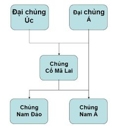

Vào thời kỳ đồ đá giữa (khoảng 10.000 năm trước đây), có một bộ phận thuộc Đại chủng Á, sống ở vùng Tây Tạng di cư về phía đông nam, tới vùng ngày nay là Đông Dương thì dừng lại. Tại đây, bộ phận của Đại chủng Á kết hợp với bộ phận của Đại chủng Úc bản địa và kết quả là sự ra đời của chủng Cổ Mã Lai (tiếng Pháp: Indonésien).

Cuối thời kỳ đồ đá mới, đầu thời kỳ đồ đồng (khoảng 5.000 năm trước đây). Tại khu vực mà ngày nay là miền bắc Việt Nam, miền nam Trung Quốc (từ sông Dương Tử trở xuống), có sự chuyển biến do chủng Cổ Mã Lai tiếp xúc thường xuyên với Đại chủng Á từ phía bắc tràn xuống, sự chuyển biến này hình thành một chủng mới là chủng Nam Á (tiếng Pháp: austro-asiatique).
Thời kỳ sau đó, chủng Nam Á được chia thành một loạt các dân tộc mà các cổ thư Việt Nam và Trung Hoa gọi là Bách Việt. Ban đầu, họ nói một số thứ tiếng như: Môn-Khơ me, Việt-Mường, Tày-Thái, Mèo-Dao,... Sau này quá trình chia tách này tiếp tục để hình thành nên các dân tộc và các ngôn ngữ như ngày nay. Trong khi đó, phía nam Việt Nam, dọc theo dải Trường Sơn vẫn là địa bàn cư trú của người Cổ Mã Lai. Theo thời gian họ chuyển biến thành chủng Nam Đảo. Đó là tổ tiên của các dân tộc thuộc nhóm Chàm .